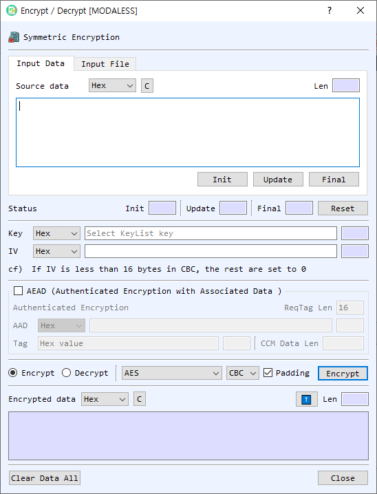

Encrypt / Decrypt Dialog Guide
The Encrypt / Decrypt dialog performs symmetric encryption or decryption on entered data or a file. Open it from Cryptography > Encrypt/Decrypt.

Figure 1. Encrypt / Decrypt dialog. This view shows input data mode, the AEAD section, and cipher settings.
Screen Areas
- Input Data / Input File — Enter data directly or select a file to process.
- Source data — Choose the input representation and enter or paste data. The Len field reports the decoded length. In file mode, use Find to select the source file and review its size and progress.
- Init / Update / Final / Reset — Run the operation incrementally: initialize the cipher, process data blocks with Update, finish with Final, or reset the state.
- Key — Select the key representation and enter a key, or leave it blank to choose a symmetric key from Key List. The length is shown beside the field.
- IV — Select the IV representation and enter the initialization vector. The note in the dialog describes IV requirements for the selected mode.
- AEAD — Enables authenticated encryption modes and associated data controls. Select AAD and enter additional authenticated data. The tag length, tag value, and CCM data length controls are used by the selected AEAD mode.
- Encrypt / Decrypt — Choose the operation. The result field is labeled Encrypted data or Decrypted data accordingly.
- Algorithm / Mode — Select a symmetric cipher and mode. Available modes depend on whether AEAD is selected and on the chosen algorithm.
- Padding — Enables padding where supported by the selected algorithm and mode.
- Encrypt / Decrypt button — Runs the selected operation on the current text or file.
- Result — Displays the output in the selected representation. The length updates automatically. The up-arrow transfers the output into the input field and selects the matching representation.
- Clear Data All / Close — Clears the dialog's data or closes the dialog.
Encrypt or Decrypt Text
- Select Input Data and choose the source data format.
- Enter or paste the plaintext (for encryption) or ciphertext (for decryption).
- Enter the key and IV, or select a key from Key List when prompted.
- Choose Encrypt or Decrypt, then select the algorithm and mode.
- For AEAD modes, enable AEAD, provide AAD if required, and set the tag parameters. For CCM, provide the data length requested by the dialog.
- Select Encrypt or Decrypt to run the operation.
- Review the result. Use the output format selector to view the result as Hex, String, or Base64.
Process a File
- Select Input File, then select Find and choose a source file.
- Select or enter a destination file path using the destination-file controls.
- Set the key, IV, operation, algorithm, and mode. Configure AEAD options if applicable.
- Select Encrypt or Decrypt and monitor progress.
Supported Modes and Notes
- Standard modes include CBC, ECB, CTR, CFB, and OFB.
- When AEAD is enabled, the available authenticated modes include GCM and CCM.
- ChaCha20 and ChaCha20-Poly1305 have mode and padding controls constrained by the cipher implementation.
- For AEAD decryption, provide the authentication tag associated with the ciphertext. Authentication failure prevents successful decryption.
- The input and output fields support Hex, String, and Base64 representations. Ensure the selected representation matches the text entered.
Incremental Processing
For staged input, select Init, enter a block and select Update for each block, then select Final. The status fields show progress. Select Reset before starting a new operation.